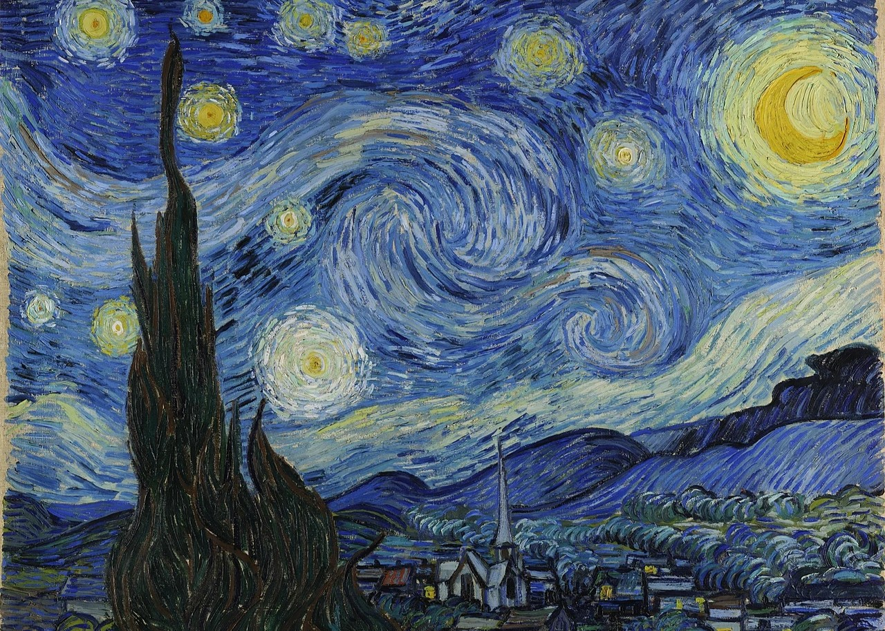

Nello specifico volevo approfondire il dipinto che per me si merita il primo posto: La Notte Stellata. La Notte Stellata rappresenta un cielo notturno turbolento, pieno di stelle luminose, sopra un paesaggio collinare con un piccolo villaggio in basso.
Sul lato sinistro, del dipinto si erge un cipresso scuro, che sembra collegare la terra e il cielo, mentre la luna e le stelle brillano con un'intensità quasi mistica. Van Gogh non ha dipinto questa scena dal vero, ma ha unito elementi reali e immaginari, creando un'opera che riflette il suo stato d'animo e la sua visione interiore del mondo. Le pennellate sono spesse, cariche di movimento e di energia, tipiche del suo stile, che enfatizza più l'emozione che la realtà oggettiva.
Infatti ciò che mi colpisce di più è il senso di movimento e di profondità emotiva che trasmette. Il cielo sembra vivo, in continuo cambiamento, quasi come se riflettesse lo stato d'animo inquieto di Van Gogh. Mi affascina il contrasto tra il cielo turbolento e il villaggio silenzioso: mentre sopra tutto si muove con energia, la piccola città in basso sembra dormire tranquilla, creando un equilibrio tra caos e quiete.
In questo dipinto vedo bellezza e malinconia allo stesso tempo. Mi fa pensare a quanto l'arte possa essere un mezzo per esprimere emozioni più profonde. E' come se Van Gogh avesse trasformato la sua sofferenza in qualcosa di straordinario e universale, un'opera capace di emozionare chiunque la osservi.
Ritorna alla home!!!